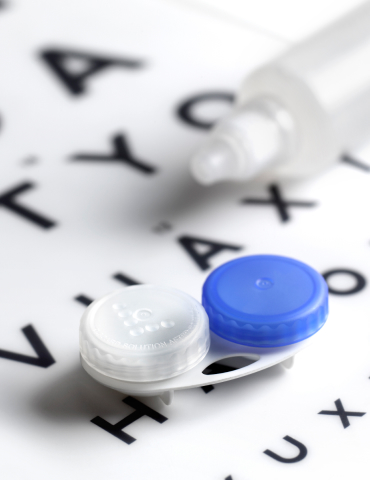
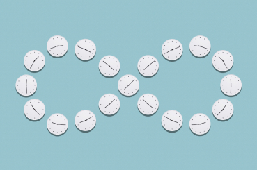

1-800-266-8228
1-800-266-8228
Copyright © 1-800 Contacts.
All Rights Reserved.
01. A little context
Why the Fairness to Contact Lens Consumers Act (FCLCA) exists.
Optometrists make up to half of their income selling the very things they prescribe: contact lenses and glasses. This conflict of interest has led to some egregious behavior over the years from optometrists who want to limit their patients' choice, so they have to buy contacts and glasses from them.
In 2003, Congress passed the FCLCA which requires optometrists to automatically release contact lens prescriptions. In 2004, the Federal Trade Commission (FTC) implemented the Contact Lens Rule (CLR) to enforce the FCLCA. In 2020, the CLR was updated to include an additional enforcement mechanism to guarantee optometrists release prescriptions.
Learn more about the FCLCA
02. More bad behavior
Optometrists have an inherent conflict of interest.
The conflict of interest is that they sell what they prescribe, so they withhold prescriptions to try to force their patients to buy contact lenses from them. This is why the FCLCA was passed and why many optometrists continue to ignore it.
Here's more context about optometrists' conflict of interest.

03. FCLCA protects consumers
The Contact Lens Rule: protecting consumers and holding optometrists accountable.
Consumers still face many of the same issues that the FCLCA is supposed to protect against. In response to this reality, the FTC unanimously approved an update to the Contact Lens Rule in 2020 which requires optometrists to obtain a Signed Acknowledgment from their patients that indicates they have received a copy of their prescription.
Many optometrists don't want to obey this law and are making ridiculous excuses why they shouldn't be held accountable.
See all the ways the FTC has vetted the Contact Lens Rule.
04 Yet another conflict of interest
Why Sen. Boozman introduced the CLR "Modernization" Act.
The American Optometric Association lobbied Senator Boozman to introduce the Contact Lens Rule Modernization Act (as if a rule that was updated three months ago needs to be "modernized").
Why Senator Boozman?
He's an optometrist.
His bill supports the idea that getting a signature from a patient is overly burdensome for optometrists.
05 Fear, uncertainty, and doubt
How much time and money does it cost to sign a piece of paper?
Many optometrists claim that the simple act of having their patients sign an acknowledgment — paper or digital — will cost them up to $18,000 per year.
Yes, that's really what they're claiming.
On the other hand, the FTC estimates that it will only cost an optometrist's office about $159 per year. And that's per office, so if optometrists share an office the cost is even less.
Read more exaggerated claims from optometrists.
06 Fear, uncertainty, and doubt
Careful or your eyeballs will explode (and other scare tactics).
Many optometrists are trotting out gross eyeball pictures, misleading health information, and scare tactics about what can happen if contact lenses aren't purchased directly from them. They're using these scare tactics to distract from their continued reluctance to release prescriptions and obey the law.
Learn about the scare tactics used by the AOA.
07 We make it as easy as possible
Answering the phone isn't hard.
Many optometrists also claim that receiving automated calls that verify their patients' prescriptions aren't useful or are hard to understand. We'll let you be the judge:
Verification call example
Provided by 1-800 ContactsWe're pretty proud of the quality of our prescription verification calls. Our verification call system employs a combination of state-of-the-art tech and our customer service associates to make sure the correct optometrist's office was reached before the verification information is transmitted. Optometrists receive, on average, less than two of these calls from us per week.
Learn more about our human-initiated voice recordings.

08 It isn't the first time this has happened
We've been down this road.
The American Optometric Association was sued by the attorneys general from 32 states and censured for using false health claims, discouraging the release of contact lens prescriptions, and for colluding with contact lens manufacturers. It's no wonder the Fairness to Contact Lens Consumers Act was passed. Still, many optometrists refuse to adhere to the law. Now, the FTC spent five intense years reviewing the issues, accepting public comments, debating solutions, and have come to a unanimous consensus that the updates to the Contact Lens Rule are in the best interest of contact lens wearers. Clearly, attempts to leverage Congress to undermine the FTC's dedicated efforts are the desperate last resort of optometrists who don't want to be held accountable to the law at the literal expense of their patients.
Dive into the extensive process the FTC went through to come to their conclusion.